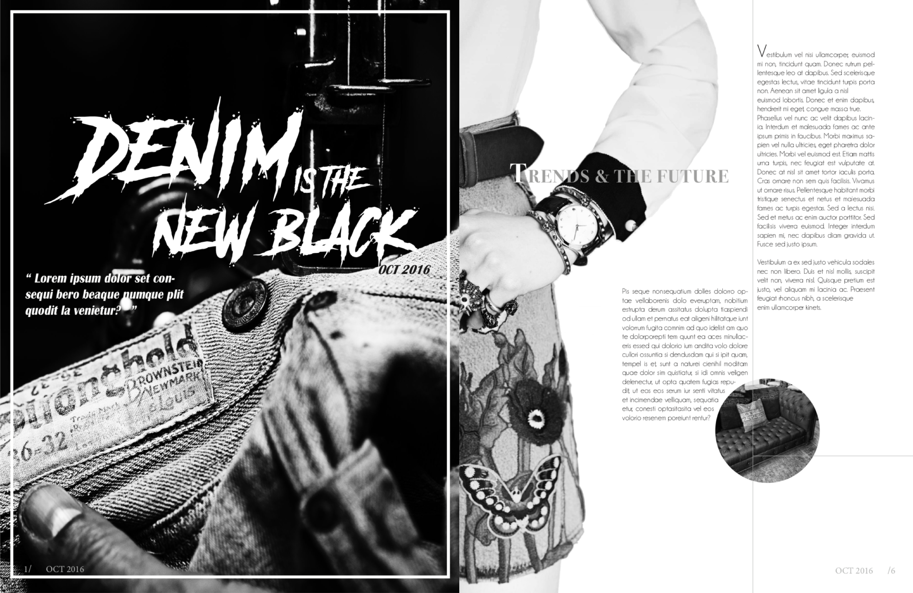
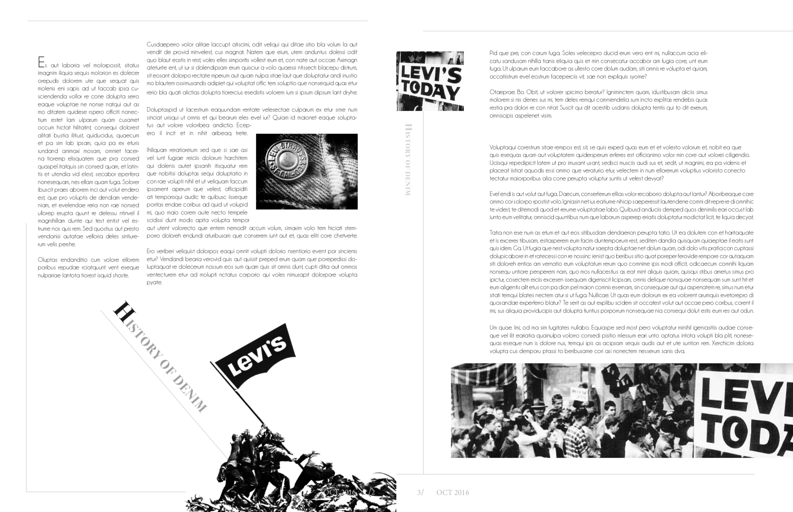
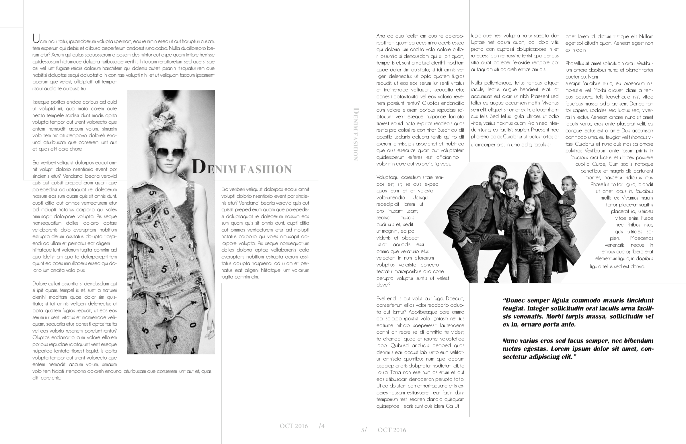

graphic design
Fashion Magazine Spreads
Print design. Layout. Typography.
2017. Created with Adobe InDesign
This project was created in the course IAT 102: Graphic Design. To practice setting type and imagery, our team were assigned to create a printed magazine layout. We decided to look into the fashion trend and we picked “denim” for our magazine spread — “Denim is the New Black”. As the art director, my role in this project was to generate and gather possible ideations, take major design decision and provided technical supports.
Intention
We chose denim, as we believed the texture itself potentially give much visual experience to the audience from our greyscale magazine spread. Denim had much variety and possibilities that being displayed in our spread. Moreover, we intended to play with lines, polygons and irregular shapes to create some energy and dynamics in our spread.
↓ Initial draft
  Challenges
The most challenging part of this project is to generate a unify and strong art direction from our different spreads, aesthetic judgment was the major problem that we faced. For the final step of our project, I suggested to combine our visual elements into different versions to test the possible outcomes of pages (see images below). By concerning the audience and effectiveness, we asked for feedback from different stakeholders like instructors and peers to unify our ideas. This provided flexibility and made a balance of the extremes in our group. Moreover, I edited the photos in the same gradient level to increase the consistency of our work.


Outcomes
The project was a triumph. In this project, I learnt the importance of balancing various opinions when leading a team. Instead of overly disputing the appealing of design at first, generate more ideas might give a better result. Massive ideation could bring greater flexibility and creativity to the product. Although it might be time consuming, testing out different possibilities before observing the results always works better in a team.